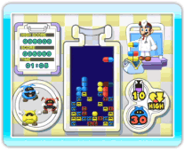
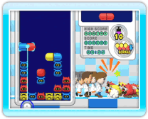

7 |
Welkom! |
 |
Dr. Mario & Germ Buster bevat twee verschillende spellen: Dr. Mario en Germ Buster. Beide hebben dezelfde basisdoelstellingen en regels, maar ze worden elk op een andere manier bestuurd.

● Wat is Dr. Mario? Het doel van het spel is dat je vitaminecapsules gebruikt om virussen te vernietigen. Als je een horizontale of verticale rij weet te maken met vier of meer elementen van dezelfde kleur, verdwijnen ze. Deze blokken kunnen capsules of virussen zijn, zolang het er maar minimaal vier zijn. Houd de Wii-afstandsbediening horizontaal vast en gebruik de knoppen om Dr. Mario te spelen. 
● Wat is Germ Buster? Het doel van het spel is hetzelfde als bij Dr. Mario: vernietig de virussen door medicijncapsules te gebruiken. In dit spel houd je de Wii-afstandsbediening verticaal vast en gebruik je de aanwijzer om te spelen. Er kunnen maximaal vier personen tegelijk spelen. ● Wedstrijden In Dr. Mario kun je lokaal tegen een vriend strijden of de Nintendo Wi-Fi Connection gebruiken om het op te nemen tegen spelers van over de hele wereld. Je kunt zelfs met personen spelen die het spel niet hebben aangeschaft, door gebruik te maken van ‘Dr. Mario Demo’ — een demoversie van het spel die je via WiiConnect24 naar je Wii-vrienden kunt sturen. |
 |
 |
 |